地政学
滝は米加国境をまたぎ、橋、税関、公園、発電施設が向かい合います。観光客の散歩道のすぐそばで、越境管理、河川利用、州と自治体の利害が重なり、水辺は外交と日常の境界になります。検問も街の風景になります。

🇺🇸 アメリカ / 🇨🇦 カナダ国境 / World City Atlas
滝の水煙、橋の検問、発電所、ホテル街、古い工業地区が近距離に重なる国境都市です。観光名所であると同時に、水、労働、記憶、暮らしを読む場所です。
都市の骨格
ナイアガラフォールズは巨大な都心ではありません。けれども水力、国境、観光、先住民の記憶、工業衰退、ホテル経済が狭い範囲に重なり、世界の人が同じ水辺へ集まります。
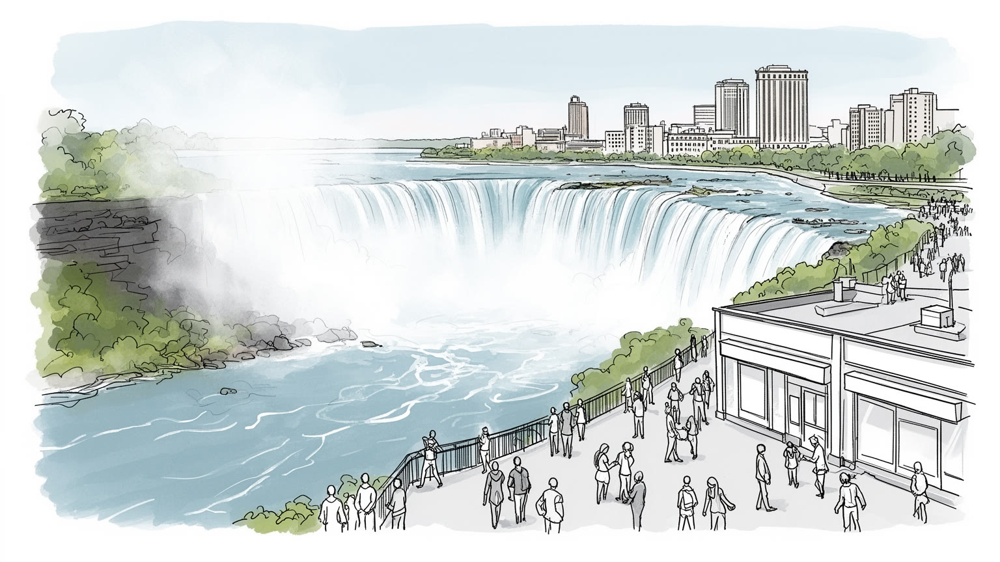
滝は米加国境をまたぎ、橋、税関、公園、発電施設が向かい合います。観光客の散歩道のすぐそばで、越境管理、河川利用、州と自治体の利害が重なり、水辺は外交と日常の境界になります。検問も街の風景になります。
観光、宿泊、飲食、カジノ、土産物、清掃、警備、交通、水力発電が雇用を支えます。夏の繁忙と冬の閑散、国境通勤、低賃金のサービス職、発電施設の技術職が同じ都市経済に含まれます。家賃も大切な条件になります。
滝は結婚旅行、移民の旅、家族観光の象徴ですが、その土地には先住民の移動路と聖性もあります。教会、記念碑、公園、博物館は、観光の祝祭と土地の記憶を同時に抱え、祈りと記念の場になります。水も記憶です。
滝の周囲は華やかなホテル街ですが、住民の日常には住宅の老朽化、季節雇用、学校、除雪、買い物、医療、空き地の管理があります。観光地の輝きと生活都市の課題が近い街です。働く人の通勤も見えます。雪も課題です。
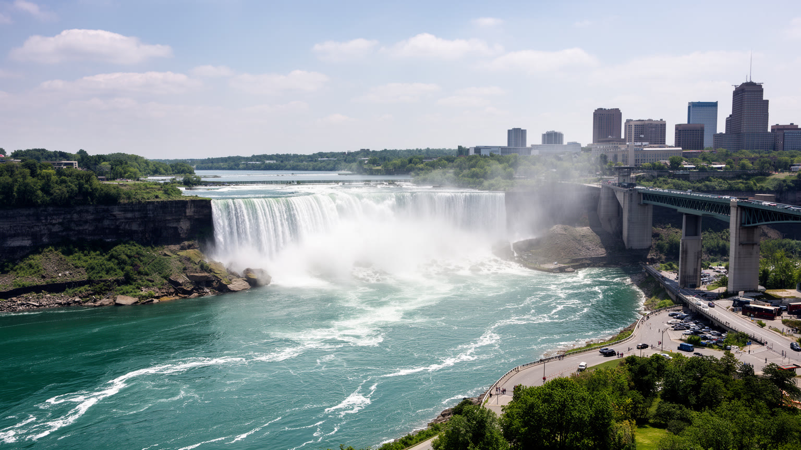
ナイアガラフォールズの都市性は、滝そのものよりも、滝が国境と地形を同時に見せる点にあります。ナイアガラ川はエリー湖からオンタリオ湖へ流れ、急な落差と峡谷を作りながらアメリカ側のニューヨーク州とカナダ側のオンタリオ州を分けます。観光客には水煙と展望台が最初に見えますが、実際には橋、税関、州立公園、発電取水口、遊歩道、住宅地、ホテル街が狭い水辺に並びます。国境は地図上の線ではなく、橋を渡る車列、身分証の確認、通貨と携帯電波の切り替わり、同じ滝を別の国から眺める経験として現れます。地形は観光の舞台である前に、都市の配置を決める条件です。崖の縁に沿って公園と道路が走り、低地や古い工業地は水と電力に近い場所を占め、ホテルは眺望とアクセスをめぐって集まります。滝の迫力は自然の絶景として消費されますが、その周囲では国境管理、土地利用、環境保護、観光収益の配分が日々調整されています。さらに、両岸の街は同じ名前を持ちながら行政制度も税制も違い、救急、警察、交通、観光案内の仕組みも別々です。対岸が目の前にある近さと、制度が簡単には混ざらない距離が、ナイアガラの独特な緊張を作ります。峡谷の眺めは一つでも、都市は二つの国の制度に分かれて動いています。だからこの街の地図は、自然地形、行政境界、観光動線を重ねて読む必要があります。
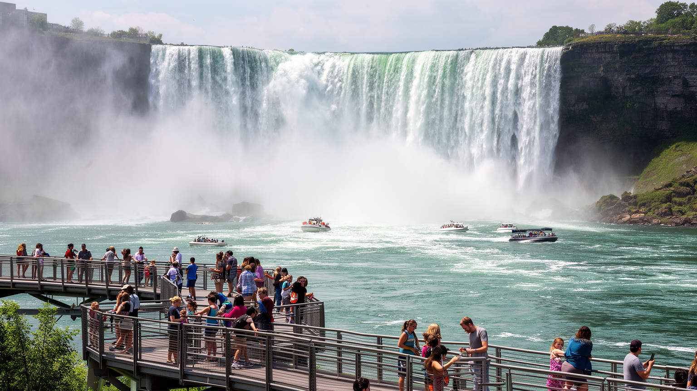
ナイアガラの滝は、自然景観でありながら徹底して都市化された観光装置でもあります。遊覧船、展望塔、滝裏の通路、夜間照明、花火、ホテルの客室、土産物店、カジノ、団体バス、写真スポットが、滝を見る体験を何層にも商品化します。新婚旅行や家族旅行の記憶が重なり、北米の大衆観光史を読む場所にもなっています。一方で、観光の成功は街の生活を単純に豊かにするわけではありません。繁忙期にはホテル、飲食、清掃、警備、交通案内の仕事が増えますが、冬は客足が落ち、雇用は不安定になりやすい。観光客向けの通りは明るく整えられても、数ブロック離れると空き店舗や低所得世帯の住宅が見えることがあります。滝の眺望は世界中から人を呼びますが、その眺望を保つには公園の維持、混雑管理、ごみ処理、川の安全管理、労働者の通勤と住居が必要です。観光地を読むとは、絶景を楽しむ人と、その絶景を働く場所にしている人の両方を見ることです。観光はまた、記憶の作り方も決めます。展望台からの写真は水の力を強調しますが、周辺の駐車場、料金所、案内板、救助体制、行列の整理も同じ体験の一部です。滝を眺める短い時間の背後に、長い都市運営があります。さらに、観光客の期待は都市の演出を変えます。夜景、記念写真、歩きやすい舗装、雨具の販売、こどもの土産選び、多言語案内は、自然を見る経験を都市のサービスへ変換します。
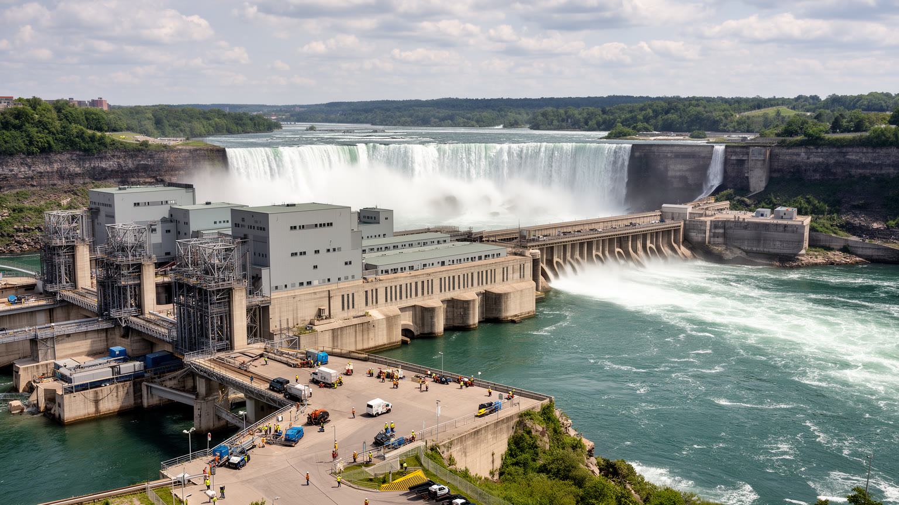
ナイアガラフォールズは観光地である前に、水力発電と工業の都市でもありました。滝の落差と水量は早くから電力として利用され、発電所、送電網、化学工場、金属加工、製紙、関連する倉庫や鉄道を引き寄せました。水は景観であると同時に、都市を動かすエネルギー資源でした。この産業化は雇用と税収を生みましたが、環境汚染、工場跡地、労働災害、河川改変も残しました。アメリカ側では工業衰退が人口減少や空き地の増加につながり、観光地の明るいイメージと隣り合う社会問題を作っています。カナダ側も発電と観光の両方を抱え、取水量や景観保全をめぐる調整が続いています。水力発電は再生可能エネルギーとして評価されますが、自然をそのまま残す営みではありません。取水、放水、送電、施設警備、河川流量の管理が必要で、滝の見え方さえ制度によって支えられています。ナイアガラの産業史を読むと、自然の力を都市がどう利用し、利用の代償を誰が負ったのかが見えてきます。現在も発電施設は見学対象であると同時に、地域の雇用、税収、技術教育、安全保障に関わります。観光客が見る水の量と、発電に回される水の量は、景観、経済、環境の妥協の結果です。水を美しく見せる都市は、水を細かく管理する都市でもあります。工場跡地の再生や環境監視は、過去の産業を忘れないための都市政策でもあります。
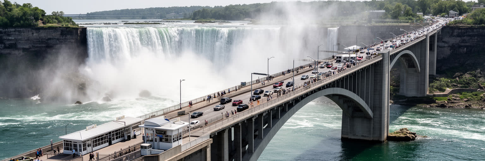
レインボーブリッジをはじめとする橋は、ナイアガラフォールズを単なる観光地から国境都市へ変えています。歩いて橋を渡れば、同じ滝を見ながらも、道路標識、税関、警察、通貨、酒や買い物の規則、医療制度、携帯料金が切り替わります。観光客にとっては特別な体験ですが、地域の事業者や労働者には日常の経済条件です。為替、国境待ち時間、入国規則、感染症対策、燃料価格は、ホテル予約、レストランの客足、店舗の仕入れ、通勤のしやすさを左右します。橋は交流の象徴であると同時に、線引きの装置でもあります。移民、難民、物流、観光、外交上の緊張は、橋の管理に表れます。国境が開いている時期には一つの観光圏のように見えますが、制限が強まると二つの都市の違いが急に前面へ出ます。ナイアガラを読むには、写真の中の美しい橋だけでなく、橋の手前で止まる車列、税関職員、書類、徒歩で越える人の緊張も見る必要があります。橋は眺望のフレームであり、生活を分ける制度でもあります。さらに、橋の通行は地域の時間感覚を変えます。週末の渋滞、団体バスの到着、買い物目的の往来、イベント時の規制は、対岸が近いほど生活に響きます。橋は便利な通路であるほど、止まった瞬間に都市の脆さを明らかにします。徒歩で渡れる距離の短さが、国家制度の重さをかえって鮮明にします。
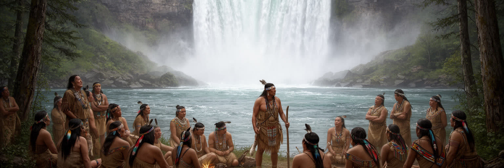
ナイアガラの土地は、観光パンフレットが始まるよりはるか前から、先住民の移動、交易、儀礼、物語の場所でした。ナイアガラ川は湖を結ぶ水路であり、滝と峡谷は通過の難所であり、同時に強い霊的意味を持つ景観でもありました。現在の公園、道路、ホテル、発電施設は、その古い利用と記憶の上に置かれています。観光地としての滝はしばしば「手つかずの自然」のように語られますが、実際には土地の所有、条約、追放、同化政策、考古資料、地名、博物館展示をめぐる歴史を抱えています。先住民の記憶を読むことは、滝を単なる絶景として消費しないための基本です。水辺の美しさは誰にとってのものなのか、誰がその土地から利益を得て、誰の語りが観光の物語から外されたのかを問う必要があります。現代のナイアガラで先住民の歴史を可視化することは、過去を飾る行為ではありません。教育、土地認識、文化的尊厳、環境保護を現在の都市運営に結びつける作業です。案内板や博物館が滝の地質だけを語り、土地に生きた人々の言葉を薄く扱えば、景観は中立に見えてしまいます。学校の見学も大切です。観光客が水の迫力に驚く時間と、地域社会が記憶を回復する時間を重ねることで、滝はより深く読めます。水辺の名前や物語を尊重することは、都市の観光を豊かにするだけでなく、土地への責任を明確にします。
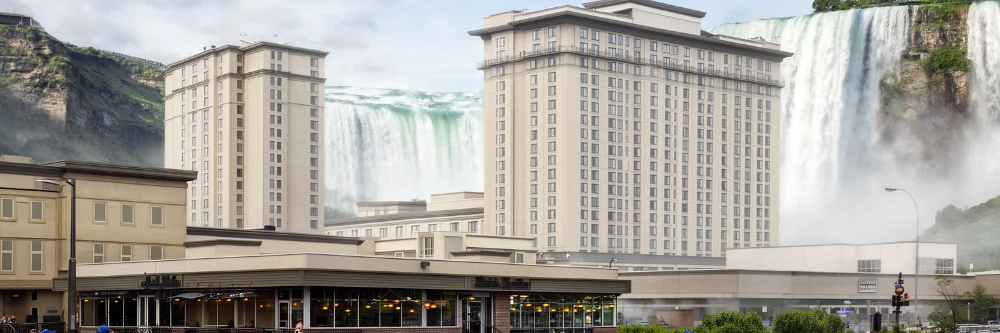
ナイアガラフォールズでは、ホテルの窓から滝が見えるかどうかが都市空間の価値を大きく左右します。眺望を売る高層ホテル、家族向けの宿、カジノ、レストラン、遊歩道、駐車場、土産物店は、客の滞在時間を延ばすために配置されます。観光客は一泊か二泊で濃い体験を求め、街はその短い滞在に合わせて光、音、食事、移動を組み立てます。この経済は税収と雇用を生みますが、仕事は季節性が強く、清掃、調理、接客、警備、保守の現場には賃金、チップ、シフト、通勤、住宅費の問題がつきまといます。観光地の表通りでは明るい看板や路上音楽が並んでも、労働者が暮らす地区には古い住宅、空き地、公共交通の不足が残ることがあります。ホテル経済は都市を外から見られる顔へ整えますが、その顔を維持する費用は住民と労働者に分散されます。ナイアガラの観光を理解するには、宿泊客数や客室単価だけでなく、誰がベッドを整え、誰が夜の通りを清掃し、その人がどこに住めるのかを考える必要があります。さらに、ホテルが眺望を独占するほど、公共空間から滝を眺める価値も重要になります。公園、歩道、無料の視点が保たれるかどうかは、観光地が一部の客室だけのものになるか、広い人に開かれるかを分けます。眺望は都市の共有財でもあります。宿泊税や観光収入を生活基盤へ戻せるかが、ホテル街と住宅地の距離を縮めます。
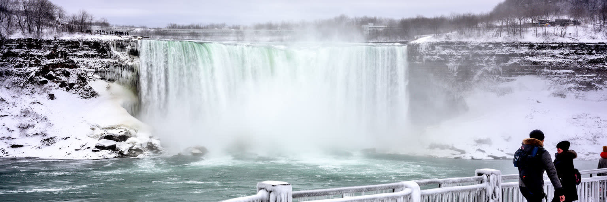
ナイアガラフォールズの気候は、滝の印象を季節ごとに変えます。夏は水煙が涼しさを作り、遊歩道と船が最もにぎわいます。秋には紅葉と低い日差しが峡谷を際立たせ、冬には冷風、湖からの雪、凍った欄干、氷の造形が滝を別の景観へ変えます。観光写真では幻想的に見える冬も、住民には除雪、凍結、暖房費、通勤、道路維持、観光客減少として経験されます。湿潤大陸性の気候は寒暖差が大きく、春の融雪や強風、夏の雷雨も河川と観光施設の管理に関わります。気候変動は、氷の量、雨の降り方、熱波、湖水位、河川流量を通じて、景観とインフラの両方に影響します。滝の美しさは自然に保たれているようで、実際には遊歩道の安全確認、凍結防止、排水、樹木管理、観光施設の休業判断に支えられています。冬のナイアガラを見ることは、観光地が一年中同じ顔ではないことを知る入口です。季節の変化は魅力であると同時に、働く人と住む人の負担を変える条件でもあります。冬の閑散期には観光業の収入が細り、短時間勤務や休業が増えます。逆に夏の混雑期には熱中症、行列、交通渋滞、水辺の安全管理が重くなります。気候は景観の演出だけでなく、雇用の量と公共サービスの負荷を決めています。天候の変化を前提にした観光こそ、この街の現実に合っています。雪と霧も都市の時間を決めます。
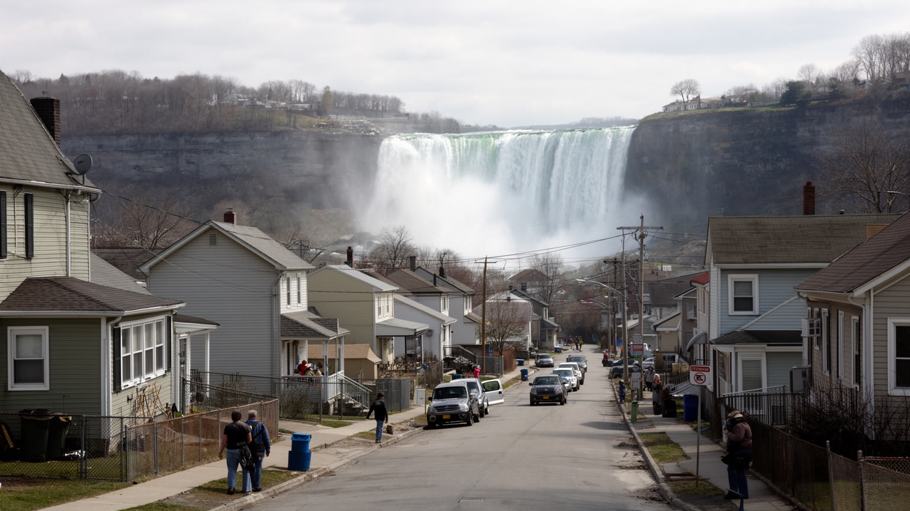
ナイアガラフォールズの生活を考えるとき、滝のすぐ近くにある華やかな通りだけでは不十分です。アメリカ側では工業衰退と人口減少の影響が残り、古い住宅、空き地、低所得、教育機会、公共交通、医療へのアクセスが課題になります。カナダ側は観光投資が比較的目立ちますが、宿泊や飲食で働く人の住宅費、季節雇用、通勤、家族生活の安定はやはり重要です。サービス労働は都市の顔を作る仕事でありながら、観光客からは見えにくい。早朝の清掃、夜間の警備、客室整備、厨房、駐車場、雪かき、施設修理があって、滝の周囲は清潔で安全に保たれます。観光収入が多くても、それが地域の住宅、学校、図書館、公園、医療に十分回らなければ、都市の暮らしは弱くなります。ナイアガラの社会問題は、観光地の失敗ではなく、観光地が抱えやすい構造です。短期滞在者向けの価値が上がるほど、長期的に住む人の生活条件を意識して守る必要があります。滝を支える街には、毎日の家計と通勤があります。住宅の老朽化や空き家は景観の問題に見えますが、実際には固定資産税、修繕費、保険、暖房費、学校区の維持と結びつきます。若い家族が残れる仕事と住まいがなければ、観光地は訪問者には明るく、住民には不安定な街になります。高齢者の通院、こどものスポーツ、地元市場での買い物も都市の基盤です。暮らしを支える政策が、滝の価値を長く保つ条件です。診療所も重要です。
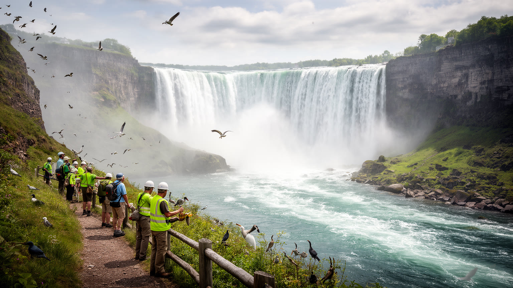
ナイアガラ川は、滝の迫力だけでなく、五大湖を結ぶ生態系の一部として読む必要があります。水鳥、魚類、河畔の植物、峡谷の微気候、湖水位、外来種、水質、流量管理は、観光客の視線の外で都市の環境を形作っています。発電のための取水や河川改変は、エネルギーを生み出す一方で、水の流れ、土砂、魚の移動、岸辺の環境に影響します。過去の工業利用は汚染の記憶を残し、浄化や土地再生の課題も残っています。公園の芝生や展望台から見る滝は整った風景ですが、その下には水質測定、護岸の補修、危険区域の管理、野生生物の保護、観光客のごみ対策が重なります。気候変動によって雨の降り方や湖水位が変われば、河川管理の前提も揺らぎます。ナイアガラの環境を守るとは、滝の写真映えを守ることだけではありません。上流と下流、発電と生態、観光と安全、都市開発と河畔の回復を同時に考えることです。川は都市の資源である前に、多くの生命の通り道でもあります。観光客が川へ近づきやすくなるほど、柵、遊歩道、救助体制、立入禁止区域の意味も重くなります。自然を身近に感じさせる都市は、自然の危険を隠さず伝える責任を持ちます。河川生態を守る知識は、観光の質そのものを高めます。川を学ぶ案内や保全活動が増えるほど、滝は消費される景色から、共同で守る環境へ変わります。
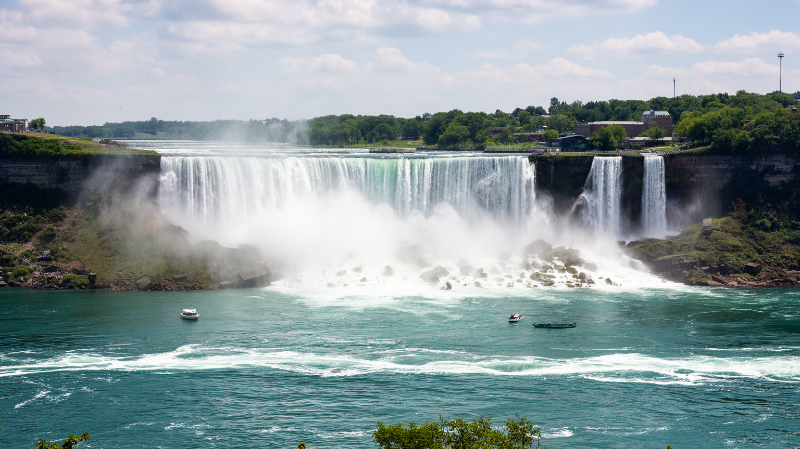
ナイアガラフォールズは、人口規模だけで測れば巨大都市ではありません。それでも世界都市として重要なのは、ここに自然景観、国境、観光産業、水力発電、先住民の記憶、工業衰退、住宅問題、河川生態が異常に近い距離で重なるからです。滝は誰にでも分かりやすい象徴ですが、その足元には複雑な都市の仕組みがあります。橋を渡る人は国境を経験し、ホテルで働く人は季節経済を経験し、発電所は水をエネルギーへ変え、住民は観光地の外側で学校、買い物、医療、除雪を必要とします。先住民の記憶は、滝を観光以前の土地として読み直させます。河川生態は、景観の美しさが水質と流量と気候に依存していることを示します。ナイアガラを読むことは、絶景を都市から切り離さないことです。自然を眺める消費、国境を越える制度、エネルギーを得る技術、労働で支える日常が一つの水辺で結びついています。その重なりを見れば、小さな観光都市にも世界を読む入口があることが分かります。さらに、この街は「見るために訪れる場所」と「住み続ける場所」の差をはっきり示します。短い滞在では滝の迫力が中心になりますが、長く見るほど国境の制度、住宅の傷み、季節労働、公共空間の維持、環境管理、祝祭の夜が見えてきます。ナイアガラは絶景の都市であると同時に、絶景だけでは都市を説明できないことを教える場所です。